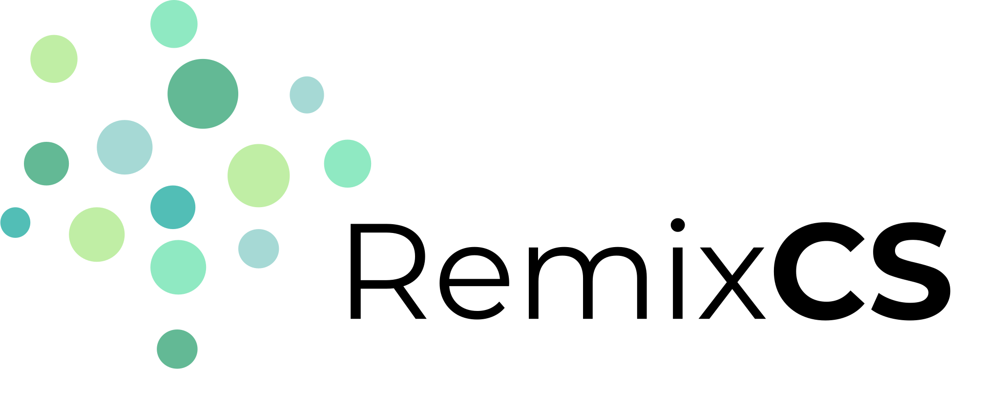

RemixCS
RemixCS

Grow
Our mission is to provide a platform for CS outreach to the greater Houston K-12 community to inspire future computer scientists of all backgrounds, specifically underrepresented minorities in CS. For more information about our work, please click here.
Learn
Our curriculum is designed to teach foundational python programming skills, as well as provide an introduction to concepts fundamental to computer science as a whole.
Explore
According to the bureau of labor statistics the number of jobs for software developers will increase by 30% by 2026. With knowledge of computer science, countless opportunities and doors will open for you.